HTML 키네틱 영상이 뭔가요
영상은 결과물부터 보여 주고 시작해요. 왼쪽 위 빨간 딱지에 '클로드 Opus 5.5 결과물'이라고 적혀 있고, 검은 화면에 '쓰지 않은 시간은 자정에'라는 문구가 흩어지는 입자와 함께 지나가요. 아래 노란 글씨는 발표자가 붙인 한 줄 평이에요.
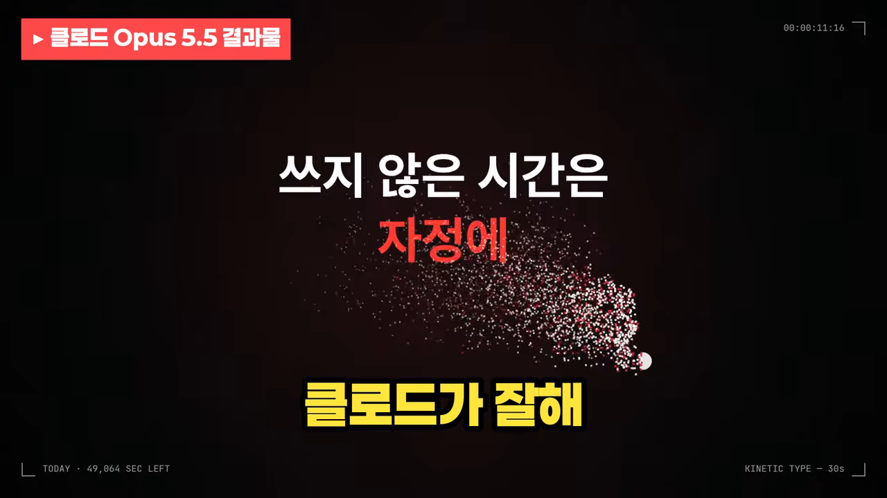
이런 영상을 발표자는 'HTML 키네틱 영상'이라고 불러요. 글자와 도형이 움직이는 모션 그래픽을 웹 페이지 코드로 만든 거예요. 표지 슬라이드는 이 방식이 무엇을 대신하는지 보여 줘요. 캡컷, 브루, 프리미어 프로에 줄을 긋고 그 옆에 'HTML 파일 하나로'라고 적었어요.
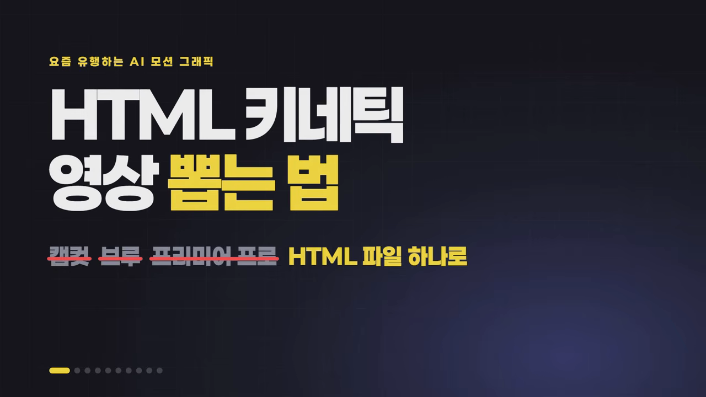
사람이 할 일은 두 칸뿐이에요. 슬라이드 왼쪽 칸이 '주제·소재 전달', 오른쪽 칸이 'AI가 조사·준비'예요. 어떤 주제로 만들지만 정해 주고, 자료 조사와 구성은 AI에게 넘겨요.
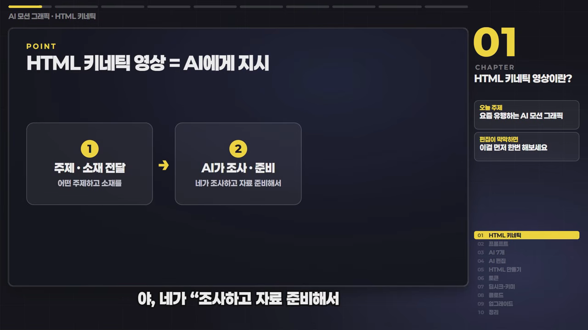
프롬프트는 이것 하나
발표자가 일곱 개 AI에 똑같이 넣은 프롬프트예요. 메모장에 적어 둔 다섯 줄을 그대로 복사해서 써요. 파란색으로 선택된 부분이 실제로 붙여 넣은 내용이고, 맨 아래 '챗지피티 / 클로드 / 딥시크 / GLM / KIMI'는 돌려 볼 AI 목록이에요.
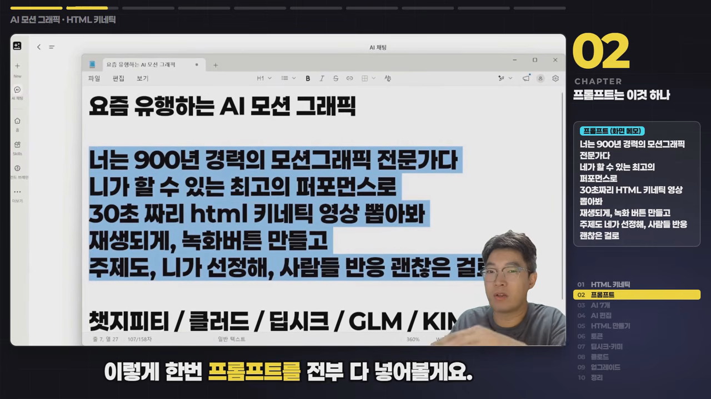
줄마다 하는 일이 달라요.
| 프롬프트 한 줄 | 하는 일 |
|---|---|
| 너는 900년 경력의 모션그래픽 전문가다 | 역할 부여. 발표자도 말이 안 된다고 웃지만, 최고 수준을 요구하는 신호예요 |
| 니가 할 수 있는 최고의 퍼포먼스로 | 대충 만들지 말라는 주문 |
| 30초 짜리 html 키네틱 영상 뽑아봐 | 핵심 키워드. 길이와 형식을 정해요 |
| 재생되게, 녹화버튼 만들고 | 브라우저에서 바로 틀고, 영상 파일로 저장할 수 있게 |
| 주제도, 니가 선정해, 사람들 반응 괜찮은 걸로 | 주제·문구까지 AI에게 맡겨요 |
일곱 개 AI에 같은 프롬프트, 편집도 AI에게
오늘 할 일은 세 단계예요. 슬라이드의 ① 프롬프트 넣기, ② HTML 코드 받기, ③ 실행하기 순서로, 코드를 받은 다음 어떻게 틀어 보는지까지 보여 줘요.
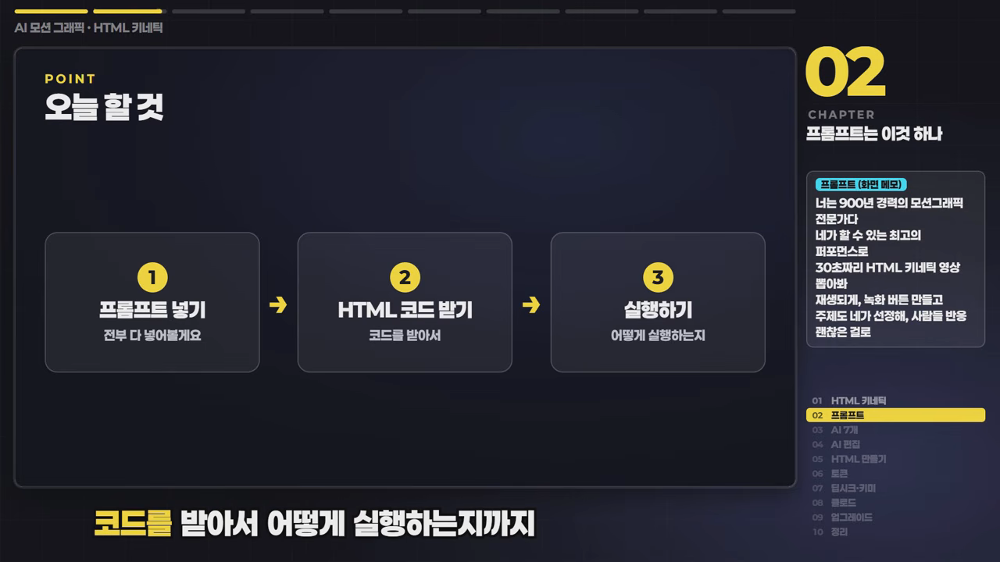
프롬프트를 넣은 곳은 두 종류예요. 슬라이드 왼쪽 파란 칸이 '웹 채팅(젠스파크 등)', 오른쪽 노란 칸이 '컴퓨터에 프로그램 설치'예요. 왼쪽 칸에는 '이 방식에서도 활용할 수 있다', '클로드 Opus는 굉장히 느림(수요 많음)'이라고 적혀 있어요. 오른쪽 칸은 비어 있지만, 발표자는 기본은 프로그램을 설치하는 쪽이 편하다고 말해요.
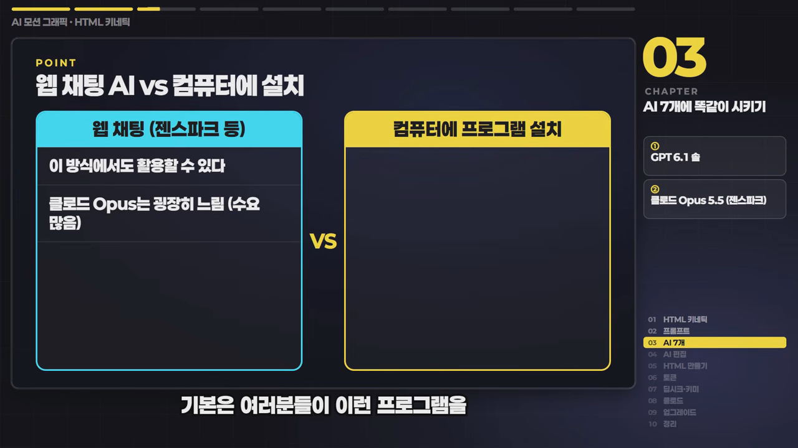
모델마다 걸리는 시간이 꽤 달라요. GLM 5.3은 반응은 먼저 왔지만 결과까지 10~15분이 걸렸어요. 발표자는 영상 길이(초)가 길수록 더 오래 걸린다고 해요.
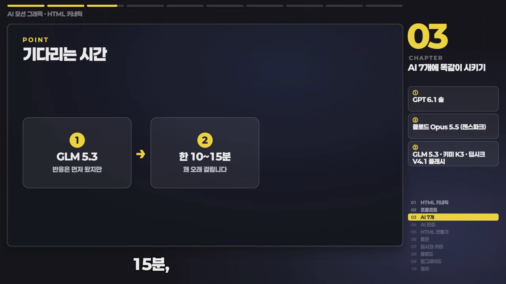
편집 프로그램 대신 AI에게
결과를 기다리는 사이에 발표자는 자기 편집 방식을 말해요. 슬라이드의 캡컷, 브루, 프리미어 프로에 모두 빨간 X가 쳐 있어요. 모바일 편집 앱 블로(Vllo)도 안 쓴대요. 대신 AI에게 영상을 보내고 "이 영상 좀 편집해줘"라고 한다고 해요.
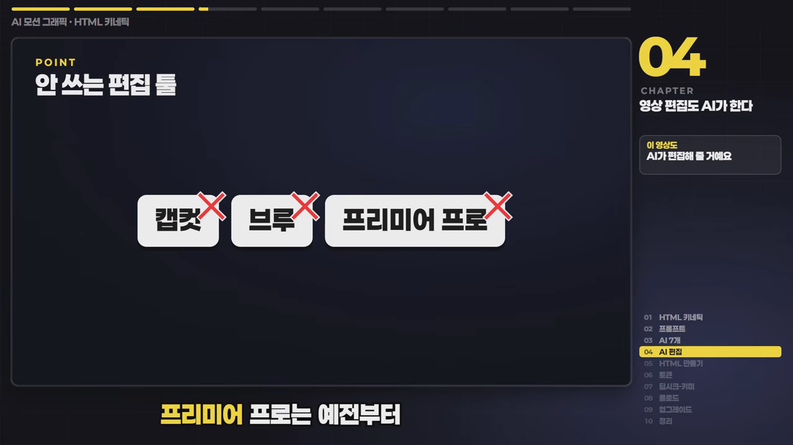
가장 쉽고 빠르게 영상 파일을 받는 법을 세 칸으로 정리해요. 키워드 'HTML 키네틱 영상', 요청 '이렇게 만들어서 코드를 나한테 줘', 결과 '그 코드만 받으면 돼요'예요.
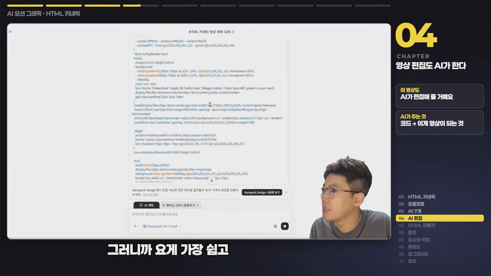
마지막으로 컴퓨터에 설치한 바이브 코딩 툴에도 같은 프롬프트를 넣어요. 가운데 입력창에 다섯 줄 프롬프트가 있고, 모델은 'Gemini 3.8 Flash High', 아래에는 'Local'이 선택돼 있어요. 오른쪽 '프로그램을 까는 게 좋은 이유' 카드 네 장이 발표자가 설치형을 권하는 이유예요.
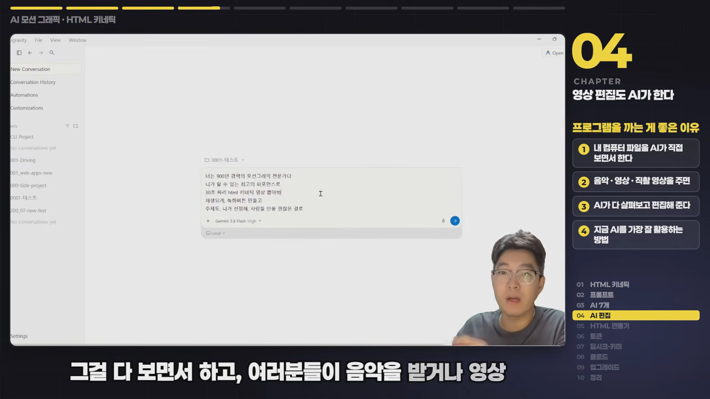
코드를 HTML 파일로 바꿔 재생하기
프롬프트를 넣고 결과를 받아 영상 파일로 만들기까지는 여섯 단계예요. 영상 여기저기에 흩어져 있는 단계를 한 장에 모았어요. 위 줄은 AI 쪽에서, 아래 줄은 내 컴퓨터에서 일어나요.
그록: 가장 먼저 나온 결과
그록 결과에는 'Be Water, My Friend'라는 문구 아래 Play와 Record 버튼이 붙어 있어요. 그 위 '사용법'에는 파일을 받거나 코드를 복사해 be_water.html로 저장하고, 브라우저에서 열고, Play로 재생하고 Record로 녹화하라고 적혀 있어요. 맨 위 줄에는 'Record 버튼 → 30fps WebM 녹화 후 자동 다운로드'라는 설명도 보여요.
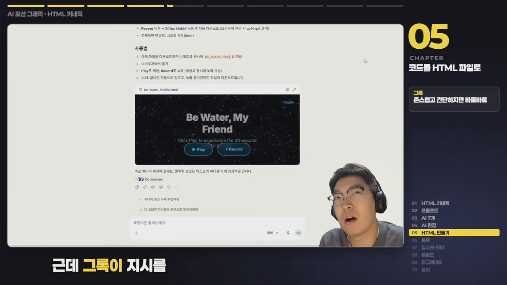
발표자는 그록이 지시를 꼼꼼히 받지 않으면 제멋대로 대충 빨리 만들어 버린다고 해요. 그래서 성의가 없다, 정확도가 떨어진다는 평을 듣는다고 덧붙여요.
제미나이 웹: 코드 받기
제미나이 웹 채팅은 설명 몇 줄과 함께 HTML 코드 블록을 줘요. 설명에는 '외부 라이브러리나 이미지 파일 의존 없이 단일 HTML 파일로 작동'한다고 적혀 있어요. 1080p 그림, 소리, 60fps 녹화 기능이 모두 이 파일 하나에 들어 있다는 뜻이에요. 코드 블록 오른쪽 위의 두 아이콘이 다운로드와 복사 버튼이에요.
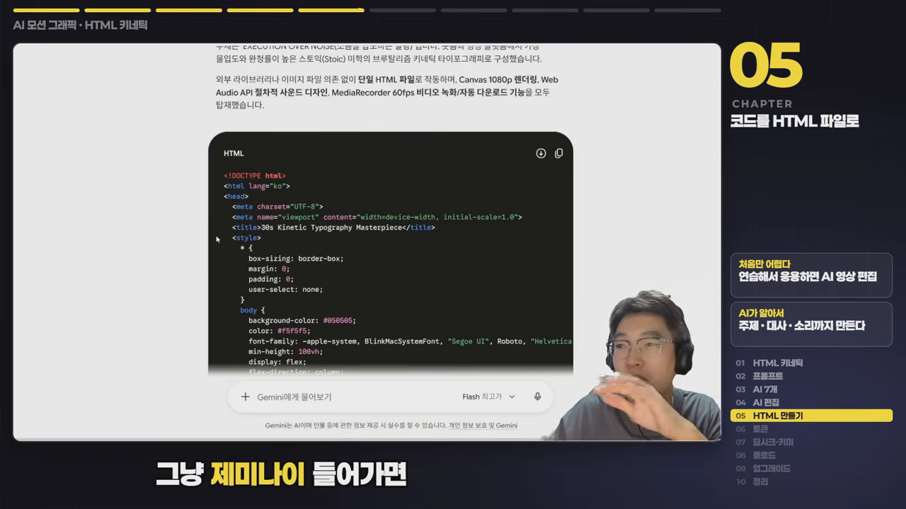
메모장에 붙여 넣기
복사한 코드를 붙여 넣는 화면이에요. 폴더에 '제미나이 3.8 플래시.txt'라는 빈 텍스트 파일을 만들고, 우클릭 메뉴의 '메모장으로 편집'으로 열었어요. 메모장 아래 상태 표시줄에 25,645자가 찍혀 있어요. 오른쪽 카드는 ① 코드 복사(클립보드) ② 폴더에 파일 만들기 ③ 우클릭 → 메모장으로 편집 ④ 코드 붙여넣기 순서예요.
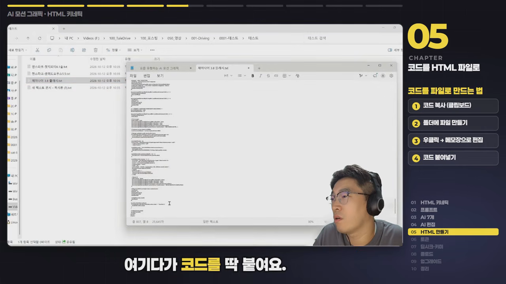
이 숫자를 보고 발표자는 "지금 AI 영상 편집은 다 코딩"이라고 정리해요. 슬라이드 세 칸이 ① 25,645자, 엄청나게 빨리 돼요 ② 다 코딩, AI 영상 편집 = 코딩 ③ 코딩 잘하는 모델, 클로드가 잘하죠예요.
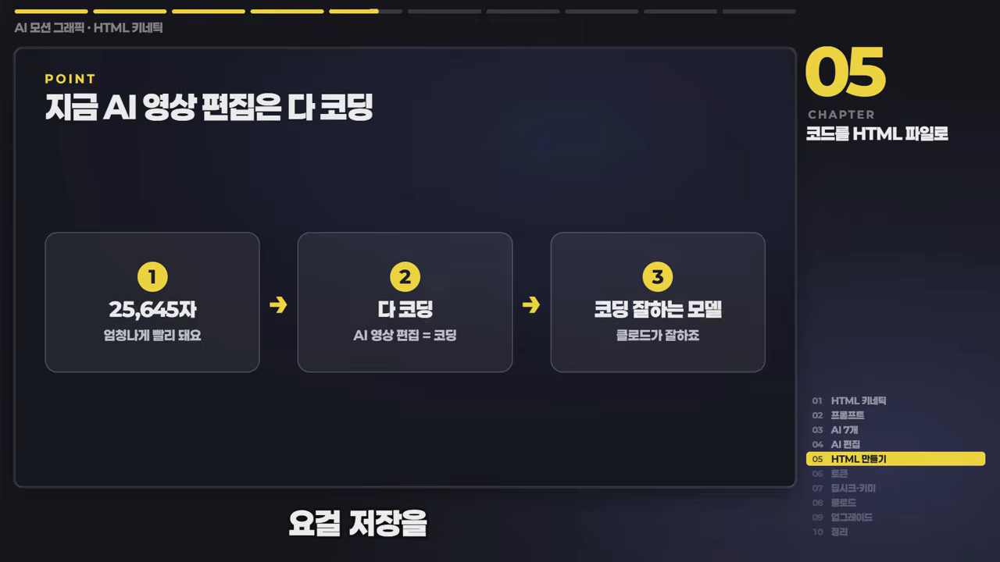
.html로 바꾸고 재생하기
저장한 파일의 이름을 '제미나이 웹 3.8 플래시.html'로 바꾸는 순간이에요. 바로 위 두 파일은 아직 .txt라 '텍스트 문서'로 보이지만, 이 파일만 유형이 'Whale HTML Doc...'로 바뀌고 크기도 27KB로 찍혀요. 브라우저가 열 수 있는 웹 페이지가 된 거예요.
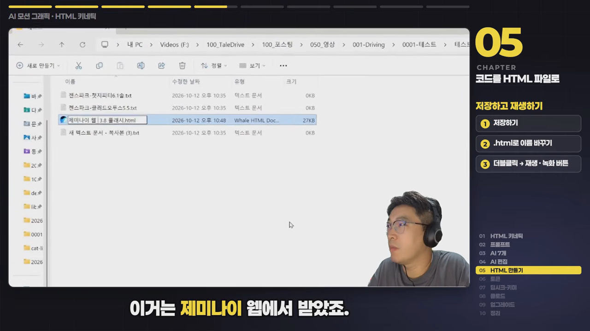
더블클릭하면 브라우저에서 바로 재생돼요. 발표자가 빨간 펜으로 동그라미 친 세 버튼이 '재생 / 재시작', '정지', '30초 고화질 녹화 (.webm)'예요. 프롬프트의 '재생되게, 녹화버튼 만들고' 한 줄이 이렇게 나왔어요.
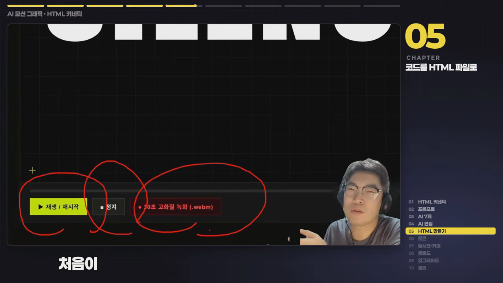
재생 중인 제미나이 결과예요. 위쪽에 'READY 1080P / 60FPS', 'CORE MOTION ENGINE // KINETIC-30S'가 찍혀 있고, 가운데 연두색 'EXECUTION'이 커졌다 작아져요. 아래 진행 막대는 13.29 / 30.00s를 가리켜요. 제미나이 설명대로라면 주제는 'EXECUTION OVER NOISE(소음을 압도하는 실행)'예요.
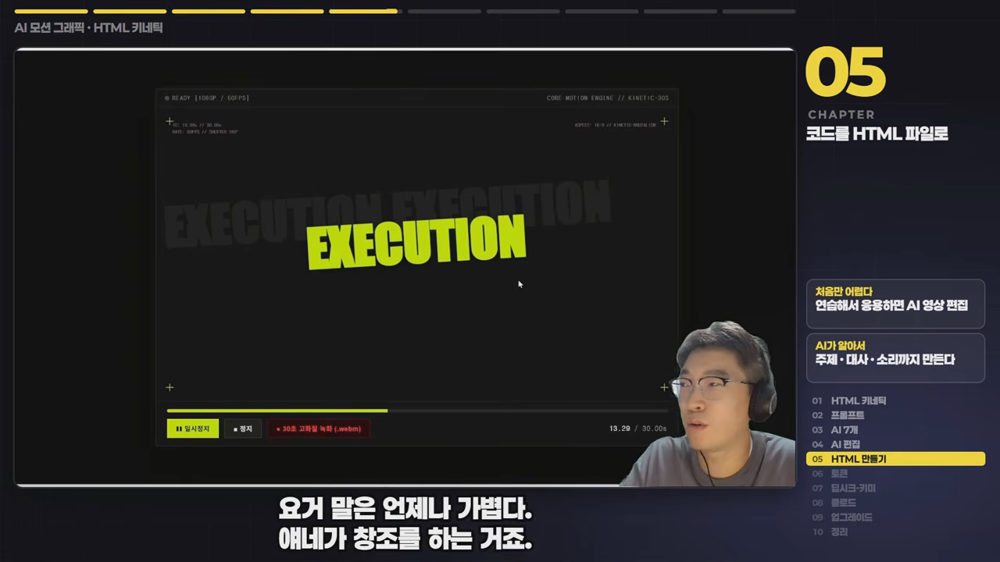
왜 싸게 뽑히나요, 그리고 딥시크·제미나이·키미
그록 4.7 헤비가 웹에서 만든 결과를 내 컴퓨터에서 틀어 본 장면이에요. 'Be formless, shapeless'라는 문구가 별 사이로 흐르고, 아래에 Play와 Record 버튼이 있어요. 앞에서 본 'Be Water, My Friend'와 같은 결의 문구예요.
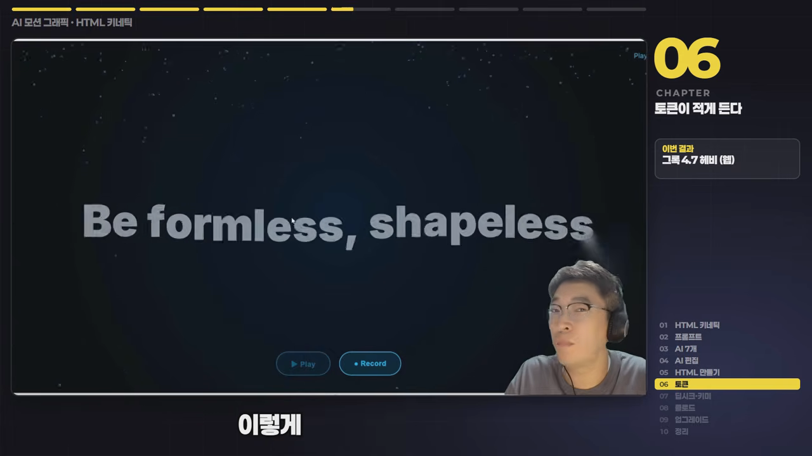
토큰이 적게 드는 이유
발표자가 꼽는 이유는 코드 길이예요. 슬라이드 왼쪽 노란 칸 'HTML 키네틱'에 '토큰이 얼마 안 든다', '만 자밖에 안 된다', '되게 싸게 뽑힌다'가 적혀 있어요. 오른쪽 초록 칸 '응용하면'에는 '강의 영상·직촬 영상'이 들어가요. 같은 방식으로 내가 찍은 영상도 적은 토큰으로 AI 편집을 맡길 수 있다는 뜻이에요.
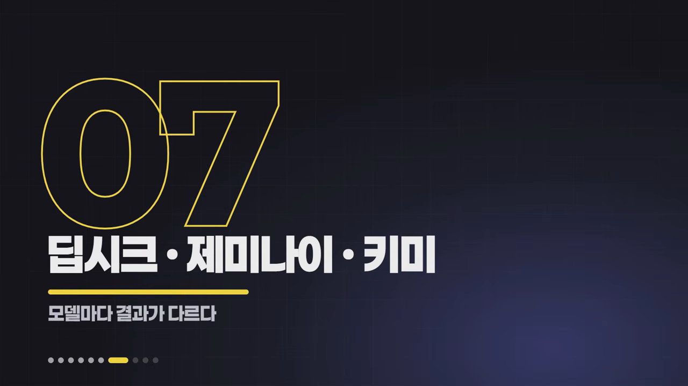
젠스파크에서 돌린 딥시크
딥시크는 젠스파크에서 돌렸어요. 입력창 아래 모델 선택에 'DeepSeek V4.1 Flash'가 골라져 있어요. 젠스파크는 유명한 AI 모델 대부분을 한곳에서 골라 쓸 수 있는 서비스라, 클로드·ChatGPT·키미도 여기서 돌렸어요.
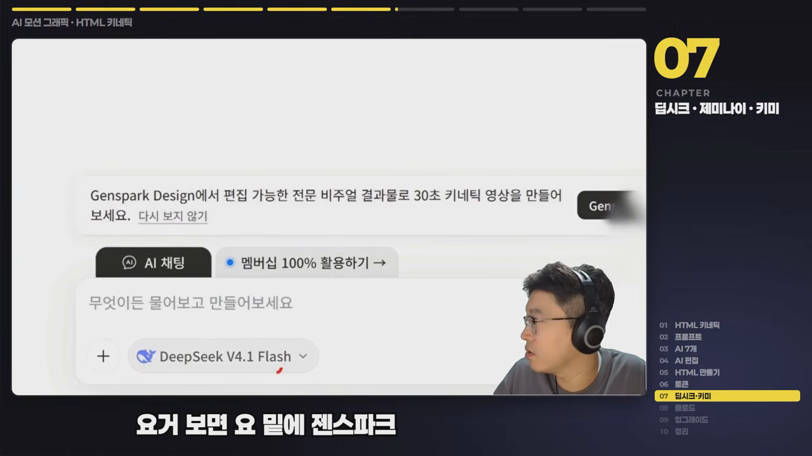
딥시크는 '새벽 3시 · 세상이 가장 조용한 시간'이라는 키네틱 타이포그래피를 만들었어요. 아래 버튼은 '재생', '정지', '처음', '사운드 ON', '녹화(30초)'예요. 발표자는 소리가 안 들어갔다고 했지만, 버튼 아래에는 '무음 자동재생 중 · 재생을 누르면 사운드와 함께 처음부터 재생됩니다'라고 적혀 있어요. 재생 버튼을 눌러야 소리가 나도록 만든 것으로 보여요.
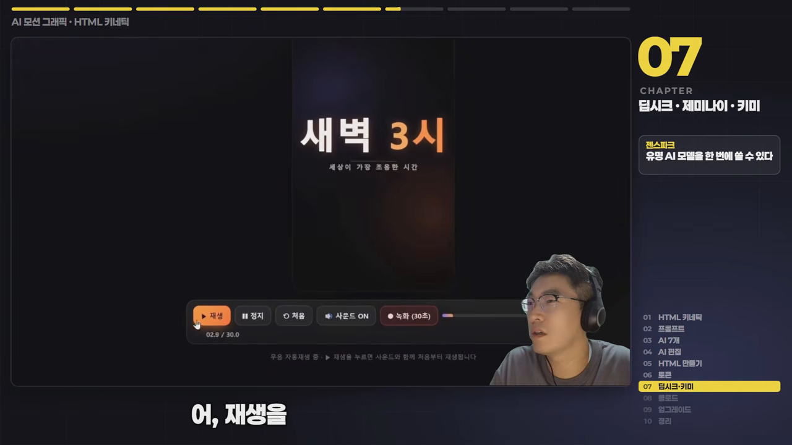
컴퓨터에 설치한 제미나이와 키미
컴퓨터에 설치한 프로그램에서 돌린 제미나이 3.8 결과예요. 왼쪽 위 빨간 딱지에 '제미나이(로컬) 결과물'이라고 적혀 있어요. 가로 화면이던 다른 결과와 달리 1080×1920 세로 영상이고, 맨 위에 'KINETIC OVERDRIVE // 30.00S', 'AUDIO: 130 BPM'이 찍혀 있어요. 세로 화면 위쪽의 'TALEDRIVE // 0001-KINETIC'은 발표자 작업 폴더 이름(100_TaleDrive, 0001-테스트)과 겹쳐요.
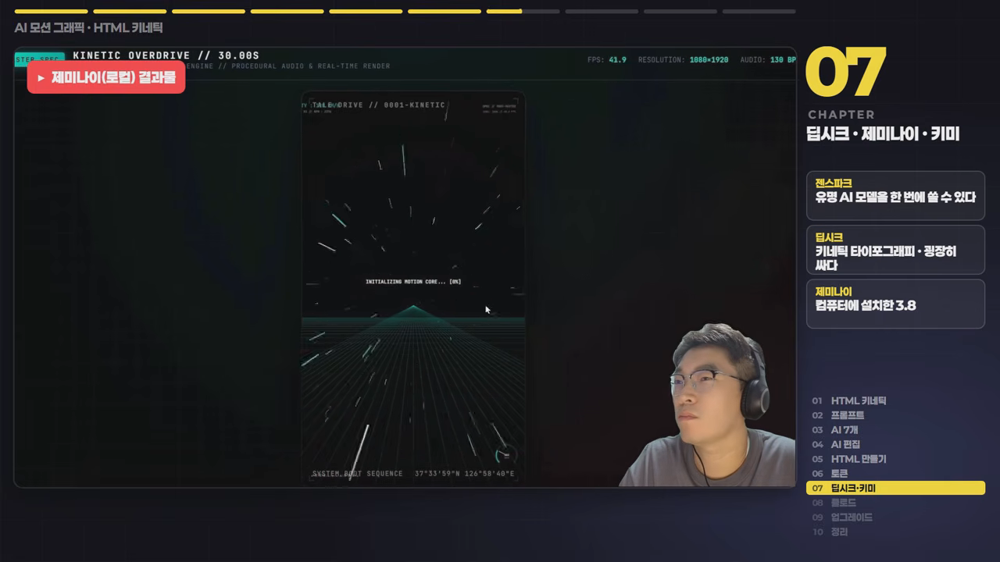
지금까지 받은 결과를 모은 폴더예요. 크기 열을 보면 '그록 웹 4.7 헤비.html' 10KB, '제미나이 웹 3.8 플래시.html' 27KB, '젠스파크 딥시크 4.1 플래시.html' 29KB이고, '제미나이 컴퓨터 3.8.html'이 65KB로 가장 커요. 아래 두 .txt 파일은 아직 0KB예요. ChatGPT와 클로드 결과를 붙여 넣으려고 미리 만들어 둔 빈 파일이에요.
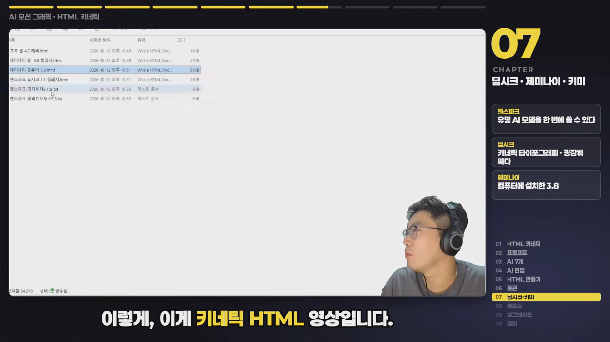
키미 K3는 'READY?'로 시작하는 영상을 만들었어요. 맨 위 '3초의 시작 · 30S KINETIC TYPE'이 주제고, 아래에 '재생', '녹화(30초 · .webm)', '사운드 ON' 버튼이 있어요. 오른쪽 카드에는 'PPT도 잘 만든다 · 시작이 괜찮음'이라고 적혀 있어요.
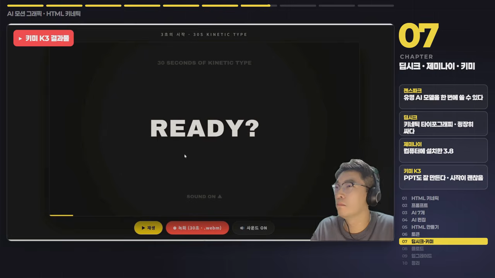
여기서 발표자는 미루지 말고 일단 해 보라고 해요. 슬라이드 세 칸이 ① 아무 AI 붙잡고 "키네틱 만들어줘" ② 결과물 보기, 재밌으니까 ③ 계속 지시, 중독이 될 겁니다예요.
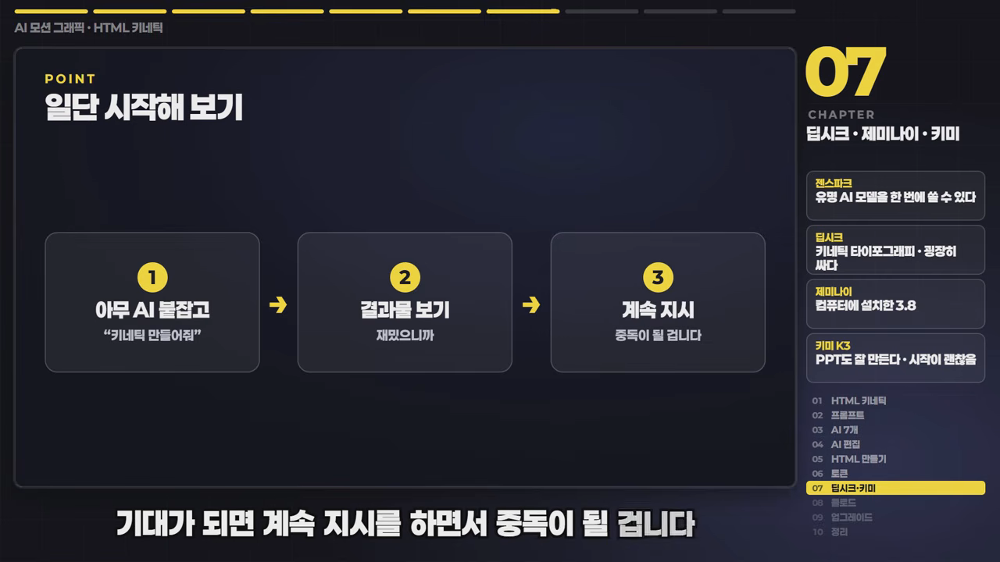
클로드·ChatGPT·GLM 결과
발표자가 가장 기대한 클로드 Opus 5.5 결과예요. 코드는 2만 6천 자고, 파일을 열면 'KINETIC TYPOGRAPHY · 30s' 아래 커다란 '86,400'과 빨간 재생 버튼, 'CLICK TO PLAY'가 떠요. 오른쪽 카드에 '클로드 Opus · 비싼 모델 · 2만 6천 자'가 적혀 있어요.
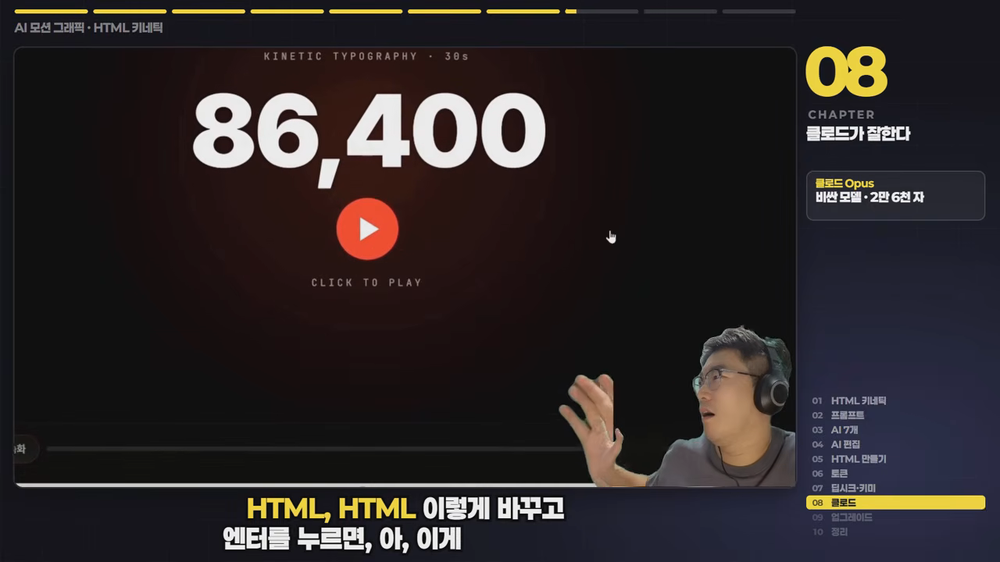
86,400은 하루를 초로 센 숫자예요. 영상 끝에는 같은 숫자가 빨갛게 바뀌고 '오늘의 잔액, 어디에 쓰시겠어요?'라는 질문이 나와요. 중간에는 '미루고' 같은 단어가 지나가요. 하루 시간을 잔액에 빗댄 메시지예요. 오른쪽 '결과' 카드는 '클로드가 잘해'예요.
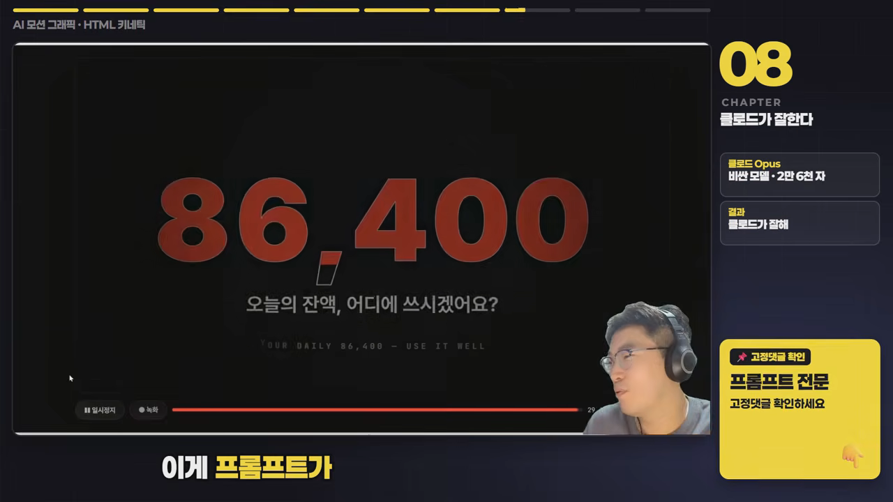
발표자는 프롬프트가 아주 간단했다는 점을 다시 짚어요. 따로 요청한 게 없는데 AI가 다 창작했다는 거예요. 오른쪽 '더 좋은 영상을 뽑으려면' 카드 세 장이 다음 단계예요. ① 키네틱 영상 많이 보기 ② "요런 스타일로 해줘" ③ 지시를 잘할 수 있어야.
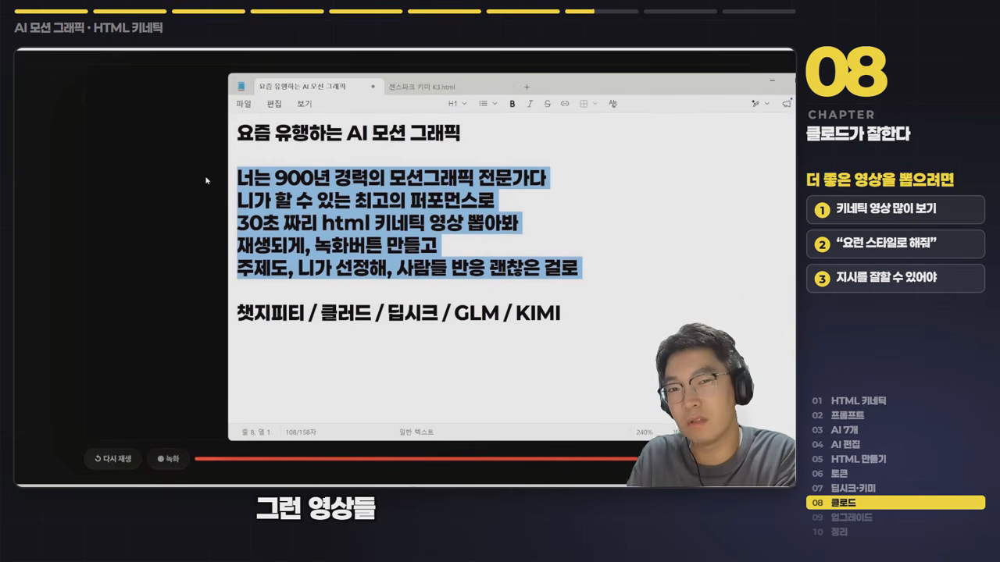
ChatGPT 6.1
ChatGPT는 코드를 3만 자 정도 냈어요. 'NEXT IS YOU.'라는 머리말 아래 '다음은 너야.'가 연두색으로 크게 뜨고, 그 밑에 '남의 하이라이트 말고, 너의 첫 장면을 만들어.'라는 부제가 있어요. 오른쪽 카드는 'ChatGPT 6.1 · 코드 3만 자 · 소리는 없음'이에요.
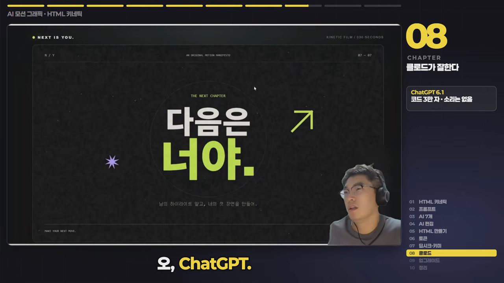
뒤쪽 장면은 주황색 배경으로 바뀌고 '실패는 업데이트.'라는 문구가 나와요. 앞 장면과 색과 분위기가 확 달라서 발표자가 '요 부분 괜찮네'라고 한 곳이에요.
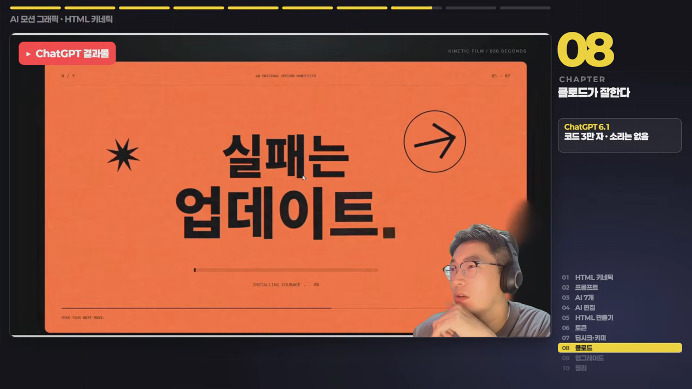
GLM 5.3
가장 오래 걸린 GLM 5.3 결과예요. 'A 30-SECOND KINETIC FILM' 아래 '4:37'이 크게 뜨고, '우리가 매일 흘리는 시간에 관한 필름'이라는 부제가 붙었어요. 아래 버튼은 재생, 녹화(영상+사운드), 일시정지, 처음이에요. 발표자 말로는 화면이 꿈틀꿈틀하면서 TV(Television)에 나오는 효과 같대요.
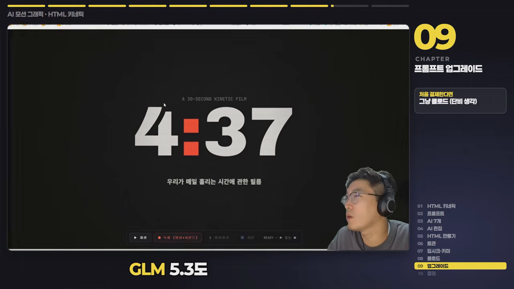
오른쪽 카드에는 '처음 결제한다면 · 그냥 클로드 (단비 생각)'이라고 적혀 있어요. 발표자는 AI를 처음 결제한다면 클로드가 낫다고 말하면서도, 자기 생각이라고 분명히 해요.
코드 길이와 결과 한눈에 보기
발표자가 말한 코드 길이를 같은 눈금에 놓았어요. 1만 자에서 3만 자 사이예요. 클로드와 ChatGPT가 길게 짰고, 그록이 가장 짧아요.
영상에서 본 결과를 모델별로 모았어요. 평가는 모두 발표자의 말이에요.
| 모델 | 어디서 돌렸나 | 만든 영상 | 발표자 평 |
|---|---|---|---|
| 그록 4.7 헤비 | 그록 웹 | 'Be Water, My Friend' | 가장 빨리 나옴. 촌스럽고 간단, 지시를 꼼꼼히 안 하면 대충 만듦 |
| 제미나이 3.8 플래시 | 제미나이 웹 | 'EXECUTION' | 소리까지 만들어 줌 |
| 딥시크 V4.1 플래시 | 젠스파크 | '새벽 3시' | 굉장히 쌈. 소리는 못 들음 |
| 제미나이 3.8 | 컴퓨터에 설치한 프로그램 | 'KINETIC OVERDRIVE' | 따로 평 없음 |
| 키미 K3 | 젠스파크 | 'READY?' | 시작이 괜찮음, 발표 자료도 잘 만듦 |
| 클로드 Opus 5.5 | 젠스파크 | '86,400' | 비싼 모델. 음악·때깔 모두 가장 좋음 |
| ChatGPT 6.1 | 젠스파크 | '다음은 너야' | 색감 좋음, 소리 없음 |
| GLM 5.3 | 영상에 안 나와요 | '4:37' | 10~15분으로 가장 느림. TV 같은 효과, 소리 있음 |
결과가 다 나온 뒤 발표자는 편집 이야기로 돌아가요. 캡컷이나 프리미어를 AI와 연결하는 방식은 납품용으로 전문적으로 하는 사람에게나 필요하다고 봐요. 일반적으로는 그냥 AI에게 영상 편집을 맡기면 된다는 거예요.
프롬프트를 키우는 법
정리하면서 발표자는 프롬프트를 키우는 순서를 보여 줘요. 슬라이드 네 줄이 ① 키워드: "30초짜리 HTML 키네틱 영상 뽑아봐"(1번) ② 원하는 스타일 ③ 사운드·버튼 넣어주기 ④ 고퀄리티·"900년 경력의 모션그래픽"이에요.
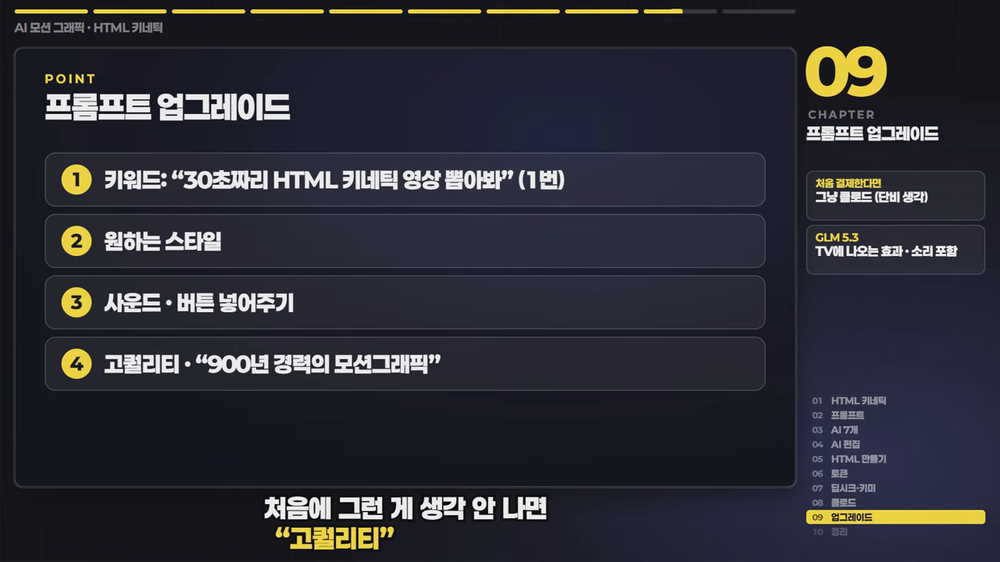
네 번째 줄이 재밌어요. 원하는 게 떠오르지 않을 때 '고퀄리티'나 '900년 경력' 같은 말로 기준만 높여 두라는 거예요. 소리는 "1.5초에서 2초 사이에 효과가 들어가게 재밌게 해줘라"처럼 시점까지 정해 줘도 된대요.
주제를 직접 정하면 쓸모가 넓어져요. 슬라이드에 나온 예는 대한민국 소개, 내 앱 소개, 내 웹사이트 소개 세 가지예요. 웹사이트 칸 아래에 '링크와 같이'라고 적혀 있어요. 링크를 같이 주면 그 사이트 소개 영상도 만들어 준대요.
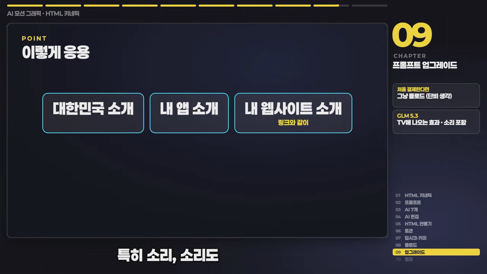
컴퓨터에 설치한 프로그램에서 하면 한 단계 더 나가요. 슬라이드 두 칸이 ① 내 파일을 본다(제 컴퓨터 파일을) ② 에셋 생성(이미지·이모티콘)이에요. AI가 로컬에서 이미지나 이모티콘을 직접 만들고, 그걸 HTML에 넣어 줘요.
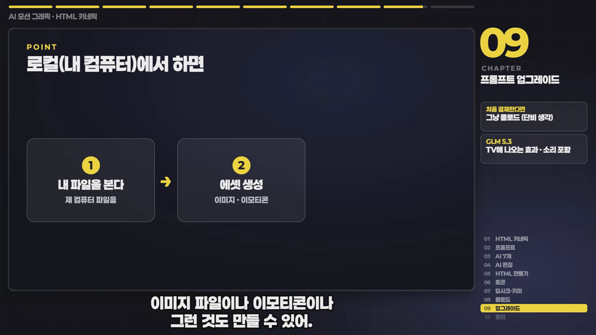
정리: 오늘 해 볼 것
마지막으로 받는 법을 다시 정리해요. 그록처럼 아예 파일을 다운로드하게 주는 곳도 있고, 제미나이처럼 코드 블록에 다운로드 버튼이 달린 곳도 있어요. 버튼이 없으면 코드를 복사해요. 슬라이드 네 칸이 그다음 순서예요. ① 코드 받기(복사·다운로드 버튼) ② 메모장에 붙여넣기 ③ Ctrl+S 저장 ④ .html로 이름 바꾸기, 재생!
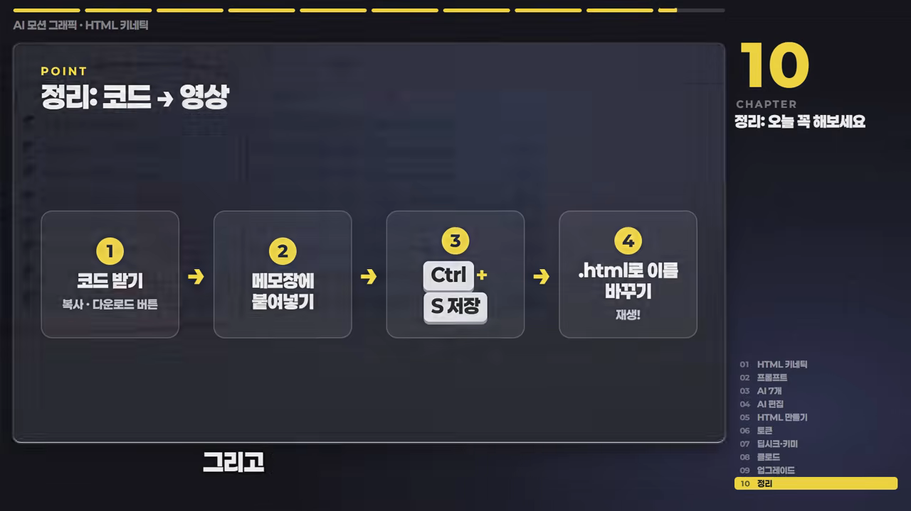
지금 결과물이 단순한 건 따로 요청한 게 없어서라고 해요. 어떤 효과를 넣을 수 있는지 AI에게 물어보면서 업그레이드하라고 권해요. 색상과 폰트도 지정할 수 있어요. 이런 영상을 AI 음악 채널의 배경으로 써도 된대요.
편집 프로그램을 안 쓰게 된 이유
발표자가 편집 프로그램을 끊은 이유는 기술이 아니라 결과였어요. 슬라이드에 캡컷, 브루, 프리미어 프로 모두 X가 쳐 있고, 아래 노란 띠에 '암만 올려도 조회수가 높지 않아서'라고 적혀 있어요. 직접 편집해 올려도 조회수가 별로였다는 거예요.
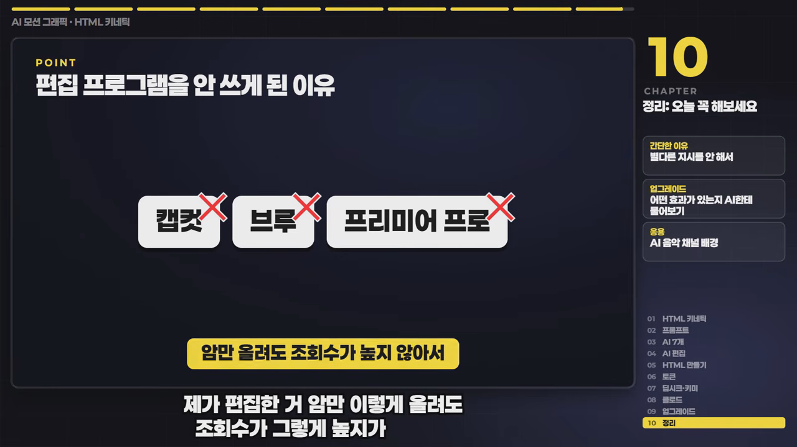
요즘은 직접 찍은 영상도 AI에게 편집을 맡기고, 이 영상도 "편집해줘" 하고 맡긴 뒤 자기는 다른 일을 한다고 해요. 결론은 간단한 프롬프트로 오늘 한 번 해 보라는 거예요. 한번 해 보면 편집을 AI에게 맡기게 된다는 게 발표자의 말이에요.
해봐야 알아 이 맛을 보면 AI한테 편집을 맡겨버리게 된다고요
— 영상 15:49